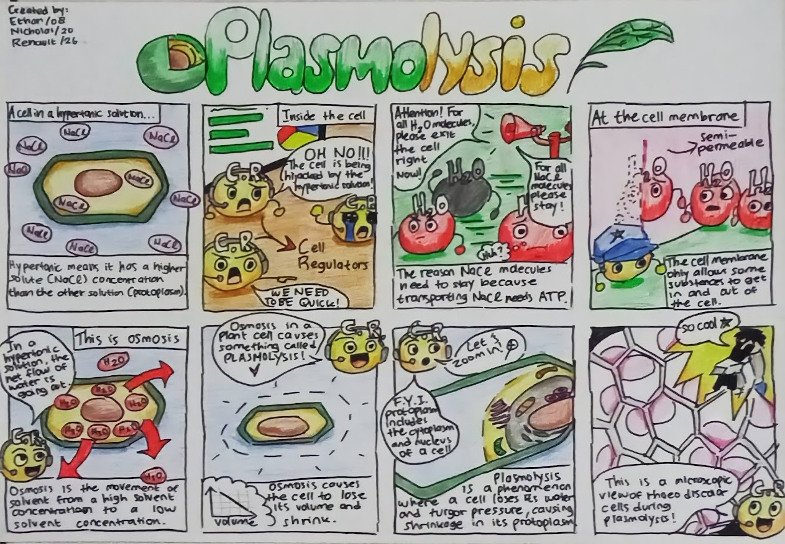

Definition: the net movement of water from a region of high
water concentration to a region of low water concentration through a
selectively permeable membrane.
Osmosis in Plant Cells
-
Isotonic solution (flaccid): solute concentration inside the cell is
equal to the amount of water transported out from the cell.
-
Hypotonic solution (turgid): plant cells placed in a solution with a
high water concentration compared to their contents (eg pure water)
will gain water by osmosis and swell up until their cytoplasm and
cell membrane are pushing against their cell wall. They are said to
be turgid.
-
Hypertonic solution (plasmolyzed): plant cells placed in a solution
with a low water concentration compared to their contents
(concentrated sugar solution) will lose water by osmosis. Their cell
membranes will peel away from their cell walls and they are said to
be plasmolysed.

Osmotic in Animal Cells
They do not have a cell wall, so will change size and shape when put
into solutions that are at a different concentration to the cell
contents.
-
Isotonic solution: red blood cells placed in a solution with the
same water concentration as their cytoplasm (0.85 per cent salt
solution) will not experience an overall change in volume. No
osmosis occurs.
-
Hypotonic solution: red blood cells placed in a solution with a
higher water concentration compared to their contents (eg pure
water) will gain water by osmosis, swell up and burst.
-
Hypertonic solution: red blood cells placed in a solution with a
lower water concentration compared to their contents (eg 1.7 per
cent salt solution) will lose water by osmosis and shrink.
Why is it important?
Osmosis is vital for maintaining the internal balance(promotes
homeostasis) of cells and organisms
-
It regulates water uptake and loss in cells, influences plant
turgidity, and is crucial for processes like kidney function in
mammals.
-
Nutrients and minerals enter the cell by osmosis which is necessary
for the survival of cells.
-
If no osmosis occurs, cells could enter a state of having too much
water or too little water. This could cause cells to die.
Osmotic Pressure as a Colligative Property
The osmotic pressure (π) of a solution is the pressure required to
stop osmosis.
It happens because the vapor pressure of pure water is higher than the
vapor pressure of the solution, there is a net transfer of water from
the left beaker to the right one. Eventually, the transfer will
continue until no more water remains in the left beaker. A similar
driving force causes water to move from the pure solvent into the
solution during osmosis.
Formula
π = MRT
π = osmotic pressure (atm)
M = molarity (mol/L)
R =
gas constant (0.082 [L atm] / [mol K])
T = absolute temperature
(K)